Administrator Dashboards
In this chapter, we will discuss the benefits of providing Administrators and Power Users with their own special-purpose home pages to provide a finger on the pulse of any application, including at-a-glance Workflow status information. One of the great things about OneStream is its built-in ability to report on just about anything – not just financial data but also non-financial information, such as headcount data, task activity, commentary, security activity, your favorite sports team’s stats... you name it! This capability is particularly useful for OneStream Administrators as it provides them with a powerful means of tracking things like Workflow status and End-User activity.
In the following step-by-step exercise, we will build a simple administrative Dashboard with graphs and tables displaying relevant Workflow status information, as well as a simple Business Rule and table to show several vital signs such as active logins, running tasks, and more.
Administrator Dashboards
When, Why, and How to Use Them
Administrator Dashboards are intended to serve as a one-stop shop for Administrators to access application vitals, metadata changes, data errors, and other functionality that they will need to administer the application efficiently.
Administrator Dashboards › When, Why, and How to Use Them
Design Considerations
What are the roles and responsibilities of your Administrator? Are they tasked with monthly data activities, such as seeding new forecasts, setting targets, etc.? Or are they solely focused on application performance and User maintenance? You will want to gather as much information on the role of the Administrator before building your Administrator Dashboard so you can be sure you are capturing relevant information and functionality.
Administrator Dashboards › When, Why, and How to Use Them
Standard Application Reports
The OneStream MarketPlace has numerous solutions and tools that are designed to help and assist our beloved OneStream Administrators. These include Task Manager, Application Control Manager, System Diagnostics, and others – more about these later. The MarketPlace also contains some very handy pre-built Report packages, namely Security Audit Reports, which are useful when the Auditors are in town, and Standard Application Reports – a suite of 70+ application-ready Dashboards and Reports that detail things like Workflow status, Application Dimension counts, formulas, commentary, and more. If you don’t already have these in your OneStream application, please install them today!
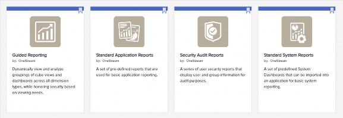
Figure 13.1
After installation, you are good to go and get all of these (and more) right out of the gate.
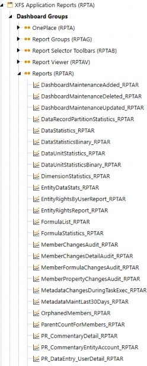
Figure 13.2
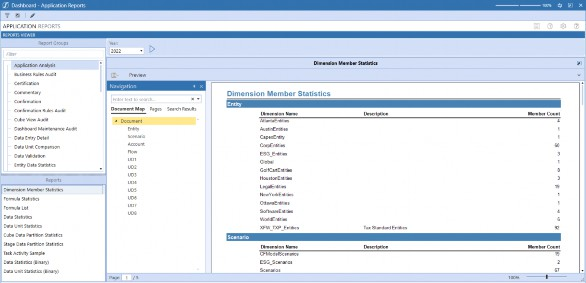
Figure 13.3
Administrator Dashboards › When, Why, and How to Use Them › Standard Application Reports
Build Your Own
The first step in building an Administrator Dashboard is to create the Dashboard Maintenance Unit (DMU) by navigating to Application Dashboards from the Application tab.

Figure 13.4
Select Maintenance Units and then click Create Maintenance Unit.
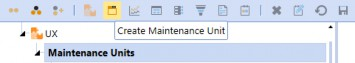
Figure 13.5
Name the Dashboard Maintenance Unit Administrator Dashboards and click save.
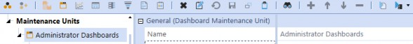
Figure 13.6
Select Dashboard Groups and click Create Group.
Figure 13.7
Name the Dashboard Group Administrator Dashboards (Admin) and click save.
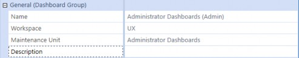
Figure 13.8
Select Components and click on the Create Dashboard Component icon.
Figure 13.9
Select Label from the dialog and click OK.
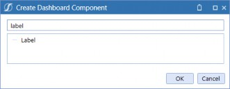
Figure 13.10
Name the label lbl_Title_Admin, type ADMINISTRATOR into the Text field, apply the Display Format settings, then save.
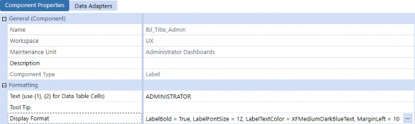
Figure 13.11
Administrator Dashboards Select the Group Administrator Dashboards (Admin) and click Create Dashboard.
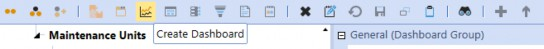
Figure 13.12
Apply the following: Name of Dashboard: 1_Header_Admin.
Type BackgroundColor = WhiteSmoke into the Display Format field and save the Dashboard.
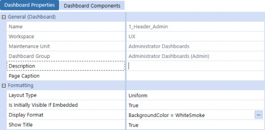
Figure 13.13
Select the Dashboard Components tab and click Add Dashboard Component.
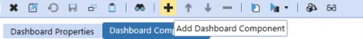
Figure 13.14 Select the label we created previously and click OK.
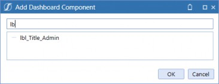
Figure 13.15
Select the Group Administrator Dashboards (Admin) and click Create Dashboard.
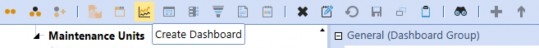
Figure 13.16
Create the following Dashboards; we will attach Dashboard Components to them later in the exercise.
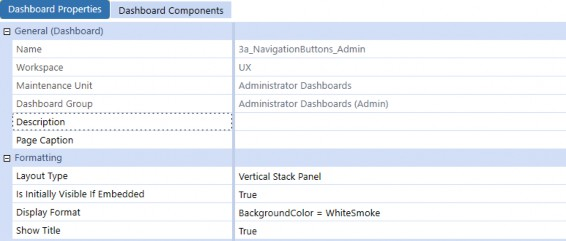
Figure 13.17
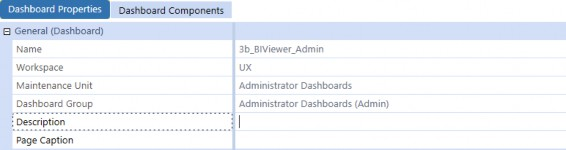
Figure 13.18
Figure 13.19
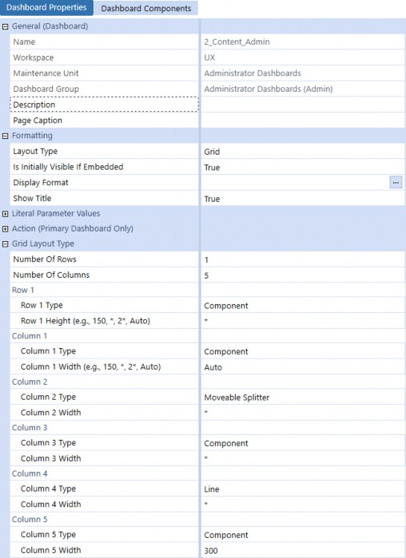
Figure 13.20
Select the Dashboard Components tab and add the Components shown below.
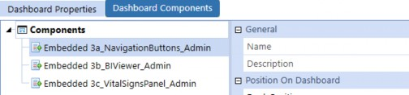
Figure 13.21
Name the Dashboard 0_Frame_Admin and enter Administrator as the Description. The Dashboard will consist of a header and content section separated by a line, so we will use a grid layout to control the section size. Change the layout Type to Grid and select 3 rows and 1 column, then set the Row 1 Height to 20 and change the Row 2 Type to Line.
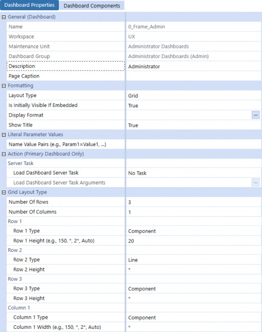
Figure 13.22
Select the Dashboard Components tab and add the Components shown below.
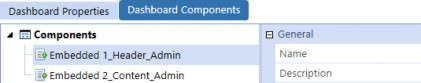
Figure 13.23
Administrator Dashboards › When, Why, and How to Use Them › Standard Application Reports
Workflow Status
For this exercise, we will create a Workflow Status Dashboard using a data adapter and BI Viewer Component to display statuses using colors, descriptions, and progress completion bar charts to enhance the appearance.
Administrator Dashboards › When, Why, and How to Use Them › Standard Application Reports › Workflow Status
Data Adapter
Navigate to Application Dashboards and select Data Adapters, then click Create Data Adapter.
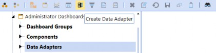
Figure 13.24
Type da_WorkflowStatus_Admin in the Name field and select Method from the Command Type combo box.
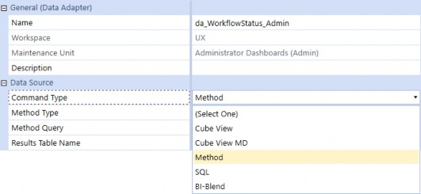
Figure 13.25
Once you have selected Method, the Method Type combo box will appear with a variety of available queries. Select WorkflowAndEntityStatus, then save the data adapter.
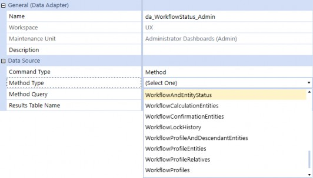
Figure 13.26
If you have never used this Type of query before, you are in for a real treat! Method queries are available as out-of-the-box helpers, which means you do not have to know how to code to use them. The logging feature is extremely powerful because it tells you exactly what you need to supply for a given query. Click Test Data Adapter to prompt the query definition.
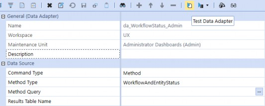
Figure 13.27
A dialog box appears with the following message and example syntax. Click OK to close the dialog, then double-click the Method Query field to open the query editor.
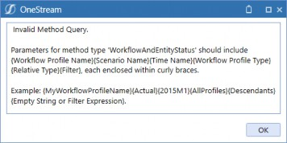
Figure 13.28
For our query, we need to use the Workflow Profile named Total Golfstream, and then we will use the Global Scenario and Time parameters to ensure the status is reflected for the current period.
Enter the query below and click OK, then save the data adapter. We have included a filter expression to only return valid input Workflows, but your query may differ based on the Workflow design.
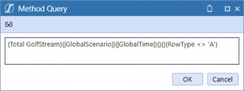
Figure 13.29
Click Test Data Adapter again to view the table data the query returns. If you see what appears to be duplicate rows for a ProfileName, scroll to the right in the data table and you will notice that the Workflow status is broken out by Entity.
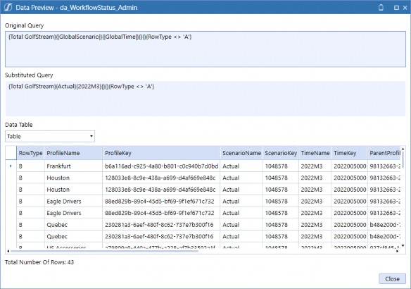
Figure 13.30
Administrator Dashboards › When, Why, and How to Use Them › Standard Application Reports › Workflow Status
BI Viewer
Our BI Viewer Component will consist of filters, cards to display contextual completion percentages, a bar chart to help visualize the Workflow progress, and grids to provide Workflow-specific tracking information. Navigate to Components and click Create Dashboard Component.
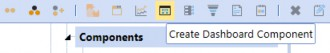
Figure 13.31 Select BI Viewer from the dialog and click OK.
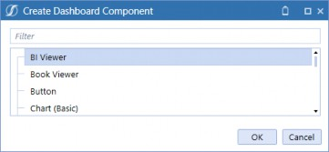
Figure 13.32
Type biv_WorkflowStatus_Admin in the Name field and then save.
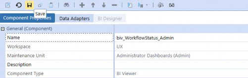
Figure 13.33
Select the Data Adapters tab and click Add Data Adapter. Select the data adapter we created, click
OK to close the dialog, then save the Component.
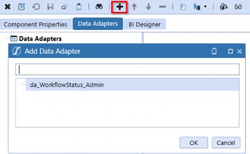
Figure 13.34
Select the BI Designer tab to open the Dashboard Designer.
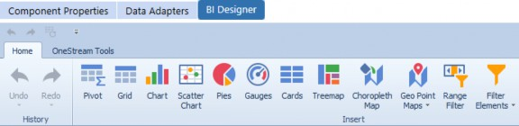
Figure 13.35
Right-click anywhere in the Data Source field list and select Add Calculated Field.
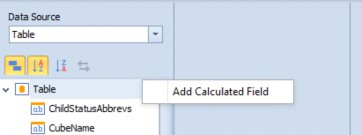
Figure 13.36
Insert the following string in the Expression Editor, then click OK. This expression strips off the characters to the right of the period (.) of the ProfileName. For example, Houston.Import will return Houston; this will be used for grouping and filtering later in this exercise.
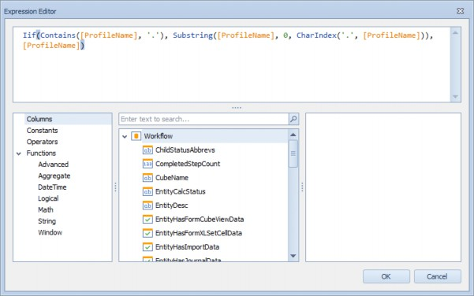
Figure 13.37
Right-click on Calculated Field 1 and click Rename. Backspace the name and type Workflow, then hit tab on the keyboard to update the name.
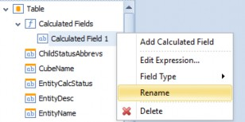
Figure 13.38
Repeat the steps completed in Figures 13.36-13.38 to create two additional calculated fields named
Workflow Task and Incomplete Steps.
Workflow Task strips off the characters to the left of the period (.) of the ProfileName; for example, Houston.Import will return Import.
Incomplete Steps will be used in the bar chart to show the outstanding steps count as a percentage of the total steps.| Calculated Field | Expression |
|---|---|
| Workflow | Iif(Contains([ProfileName], '.'), Substring([ProfileName], 0, CharIndex('.', [ProfileName])), [ProfileName]) |
| Workflow Task | Iif(Contains([ProfileName], '.'), Substring([ProfileName], CharIndex('.', [ProfileName])+1), 'Review') |
| Incomplete Steps | [TotalStepCount] - [CompletedStepCount] |
Figure 13.39
Administrator Dashboards › When, Why, and How to Use Them › Standard Application Reports › Workflow Status › BI Viewer
Workflow Filter
The first Dashboard item we will create is a filter element showing our Workflow hierarchy structure in a visual format to enable multi-selection filtering. From the Home menu, click Filter Elements and select Tree View.
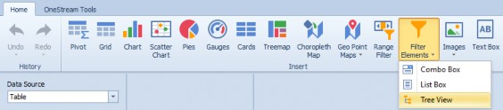
Figure 13.40
Click and drag Workflow to the Dimensions field on the Data Items pane, then click and drag Workflow Task beneath it. Navigate to the Design tab and click Show Caption to turn off the header, and click Auto Expand to show the full hierarchy.
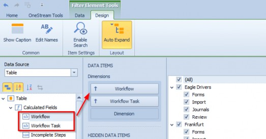
Figure 13.41
| Note: Save the BI Viewer Component to see the Tree View auto-expand in the Designer. |
Administrator Dashboards › When, Why, and How to Use Them › Standard Application Reports › Workflow Status › BI Viewer
Workflow Task Grid
Next, we will add a grid to list Workflow tasks and respective statuses. This will allow us to provide detailed task information that can be filtered using the tree view we created, or from the cards that we will add later in this section. From the Home menu, click Grid.
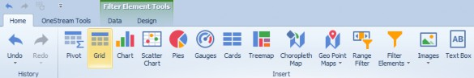
Figure 13.42
Drag Workflow, Workflow Task, WorkflowName, and StatusText to the Columns field.
Navigate to the Design tab and click Show Caption, Horizontal Lines, and Vertical Lines to turn them off.
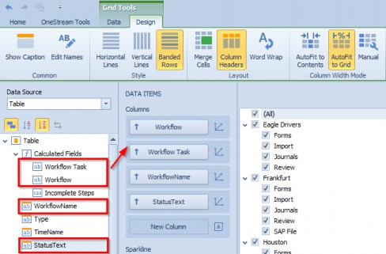
Figure 13.43
Let’s apply colors to the status field using green for Completed, red for Not Started, and yellow for anything that is in process. Right-click in the grid and select Edit Rules.
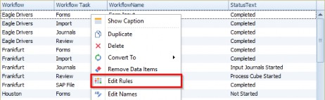
Figure 13.44
The Edit Rules dialog appears. Select StatusText from the calculated by drop-down menu and then click Add and select your expression.
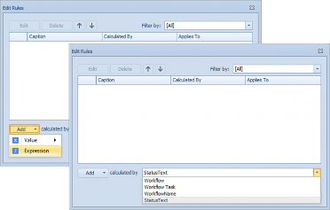
Figure 13.45
The Expression Editor dialog opens. Hover over the word And to view the expression actions, click
+ to add a condition, then pick StatusText = Completed from the selectors as shown below. Select pale green as the appearance and change the Apply to selection to StatusText before clicking OK.
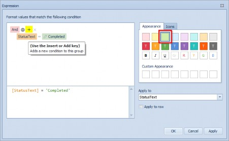
Figure 13.46
Repeat the steps in Figures 13.45-13.46 to apply pale red to StatusText = Not Started, and pale yellow to StatusText <> Completed and StatusText <> Not Started. Figure 13.47 shows the end result.
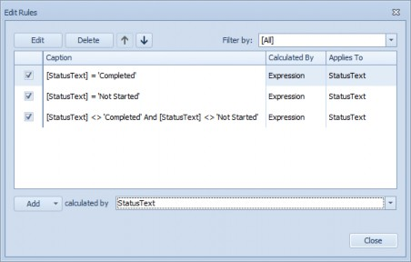
Figure 13.47
Administrator Dashboards › When, Why, and How to Use Them › Standard Application Reports › Workflow Status › BI Viewer
Bar Chart
Next, we shall add a bar chart to show Workflow completed versus incomplete Workflow step count with percentages; this will be the focal point of our Dashboard. From the Home menu, click Chart.
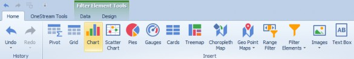
Figure 13.48
Drag CompletedStepCount to the Value field, drag Incomplete Steps beneath it, then drag
Workflow and Workflow Task to the Arguments field.
Navigate to the Design tab and click Rotate, Center Legend Horizontally, and Full-Stacked Bar to apply these settings. Click Show Caption to turn this off; I think the cards look cleaner without the caption, but you can certainly leave this setting on if you prefer. Your settings should look like the figure below.
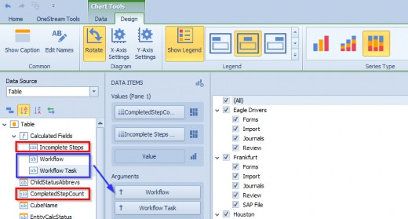
Figure 13.49
Click Y-Axis Settings, uncheck the boxes for Show grid lines and Show title, then click OK.
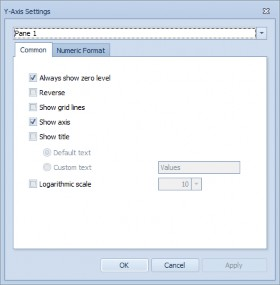
Figure 13.50
Navigate to the Data tab and click Drill Down and Arguments. Applying these settings will suppress the Workflow tasks associated with a Workflow while making the Workflows drillable.
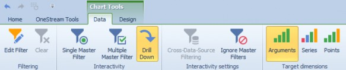
Figure 13.51 Right-click on the chart and click Edit Names.
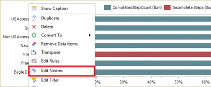
Figure 13.52
Update the names to Completed Steps and Incomplete Steps, then click OK.
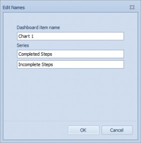
Figure 13.53
| Note: Names can also be updated by right-clicking on the data field and selecting Rename. |
Administrator Dashboards › When, Why, and How to Use Them › Standard Application Reports › Workflow Status › BI Viewer
Cards
Next, we will add cards to display Workflow status percentages with multi-select enabled to show additional filtering capability. From the Home menu, click Cards.
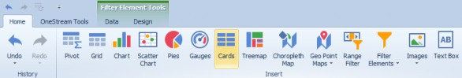
Figure 13.54
Drag StatusText to the Actual field, then drag StatusText to the Series field. This will populate a card for each status and the percentage of the total number of steps. Navigate to the Design tab and click Show Captions.
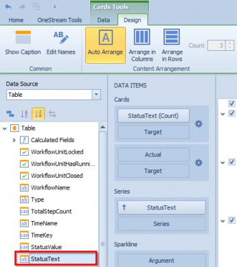
Figure 13.55
Hover over the StatusText data field and click the arrow to open the data item menu. Click Percent of Total from the Calculation options. Navigate to the Data tab and click Multiple Master Filter.
Figure 13.56 From the Data Items pane, click the gear icon.
Figure 13.57
Select the Lightweight template, then navigate to the Format Options tab and change the Actual value format to Percent with a Precision of 2. Click Apply, then click OK to close the dialog.
Figure 13.58
Once we have completed adding our Dashboard items, we need to organize the Dashboard in a way that is intuitive and easy to navigate. In the figure below, we have mocked up where we want to move the items. The cards will be placed horizontally across the top, the chart will nest below it to the right of the tree view, and the grid will sit below the chart.
Figure 13.59
Move each item using drag and drop functionality. Drag the cards to the top until a thick blue block appears, then release the mouse button to position it in the desired location. Move the other items until you are satisfied with the layout.
Figure 13.60
| Note: Right-click on the Component and click Show Captions to identify the object easily. |
After we have positioned the Dashboard items, we can make additional modifications to the title and bar chart colors to improve the appearance.
Figure 13.61
From the Home tab, click Title.
Figure 13.62
Uncheck the Show Master Filter state box and change the Text to Workflow Status, then click OK.
Figure 13.63
From the Home tab, click Edit Colors.
Figure 13.64
Change the colors for each of the values to update the bar chart, then click OK.
Figure 13.65
Here is what the end result looks like; we are now ready to add this to our main Dashboard.
Figure 13.66 Navigate to the Dashboard Group and click Create Dashboard.
Figure 13.67
Navigate to the Dashboard named 3b_WorkflowStatus_Admin and select the Dashboard Components tab. Click Add Dashboard Component. Start typing in biv to see the applicable Components appear, select the BI Viewer Component we created previously, and click OK. Then save the Dashboard.
Figure 13.68
Administrator Dashboards › When, Why, and How to Use Them › Standard Application Reports
Vital Signs
Administrators are responsible for monitoring the application’s health. This means checking for errors and system messages that may impact Users and data quality. OneStream has a MarketPlace solution called Close Manager – a solution that consists of various application monitoring Reports and Dashboards to support Administrator functions. Instead of recreating the solution, we can simply create an embedded Dashboard Component to display the solution on our Administrator Dashboard.
The Close Manager solution is shown below; we shall create an embedded Dashboard that will display the Vital Signs Dashboard in our Dashboard.
Figure 13.69
Navigate to Components and click Create Dashboard Component.
Figure 13.70 Select Embedded Dashboard from the dialog and click OK.
Figure 13.71
Administrator Dashboards Name the Component emb_VitalSigns_Admin and click the Edit button.
Figure 13.72
Type VitalSign into the object lookup dialog and select 0_VitalSignPanel_CMRV, then click OK.
Figure 13.73
Navigate to the Dashboard named 3c_VitalSignsPanel_Admin, select the Dashboard Components tab, then click Add Dashboard Component.
Figure 13.74
Type Vital in the search bar and select the embedded Component we created. Click OK and save the Dashboard.
Figure 13.75
Administrator Dashboards
Conclusion
In this chapter, we built an Administrator Dashboard with navigation buttons to open a variety of OneStream Dashboards, a BI Viewer that offered a visual way to view Workflow status, and an embedded Dashboard that shows how you can easily leverage existing Dashboards throughout an application.
The MarketPlace solution Standard Application Reports contains 70+ Reports that are incredibly useful on their own, but these can also be copied and modified to produce additional Reports tailored to your organization’s needs. Hopefully, this has your juices flowing for ideas of what to build for your Administrator Dashboards! Happy building!